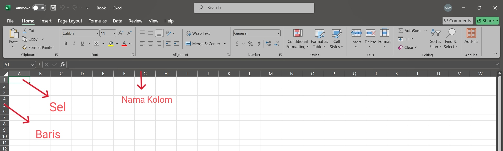

Microsoft Excel adalah aplikasi perangkat lunak lembar kerja (spreadsheet) yang dikembangkan oleh Microsoft. Excel memungkinkan pengguna untuk mengolah dan menghitung data numerik dengan menggunakan berbagai rumus dan fungsi yang tersedia, menjadikannya alat yang sangat berguna dalam berbagai bidang, termasuk akuntansi, analisis data, dan perencanaan keuangan.
Mengenal Worksheet
1. Row atau baris, adalah bagian dari worksheet yang melintang secara horizontal dari kiri ke kanan dan ditandai dengan angka, mulai dari 1. Setiap baris memiliki nomor unik yang memudahkan pengguna dalam mengidentifikasi lokasi data di dalam spreadsheet.
2. Column atau kolom adalah bagian dari worksheet yang melintang secara vertikal dari atas ke bawah, ditandai dengan huruf, mulai dari A hingga XFD, yang mencakup 16.384 kolom. Kolom membantu dalam pengorganisasian data secara vertikal.
3. Cell atau Sel adalah pertemuan antara row dan column Setiap sel memiliki alamat unik yang ditentukan oleh kombinasi kolom dan barisnya, misalnya, sel C5 merujuk pada pertemuan kolom C dan baris 5. Sel digunakan untuk memasukkan data, baik teks maupun angka.
4. Range atau rentang adalah kumpulan beberapa cell yang dapat terdiri dari satu atau lebih baris dan kolom. Contohnya, rentang A1:B2 mencakup sel A1, A2, B1, dan B2. Rentang digunakan untuk melakukan operasi pada sekelompok data sekaligus.